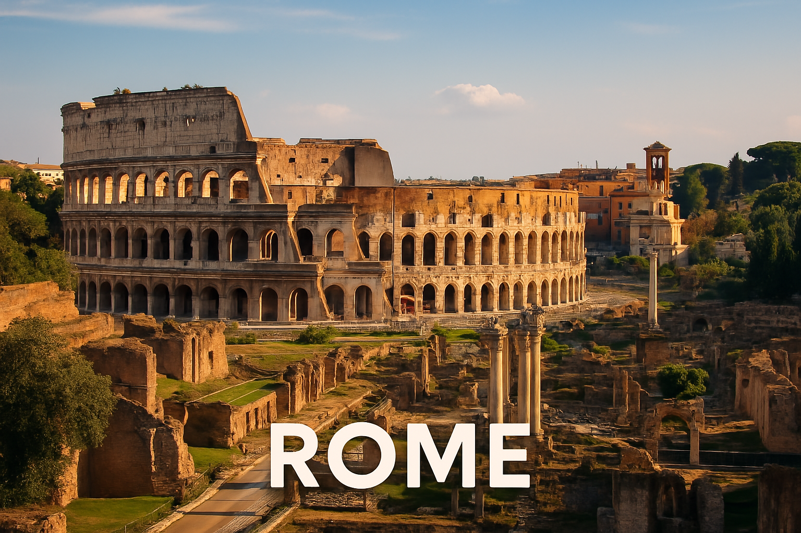

Rome
Rome est la capitale de l'Italie, connue pour le Colisée, le Vatican et son patrimoine antique.

Le savais-tu ? 🦊
Le Colisée pouvait accueillir jusqu’à 80 000 spectateurs à l’époque romaine ! 🏟️
Petit Quiz ğŸ§
Quel fleuve traverse Rome ?
Carte interactive